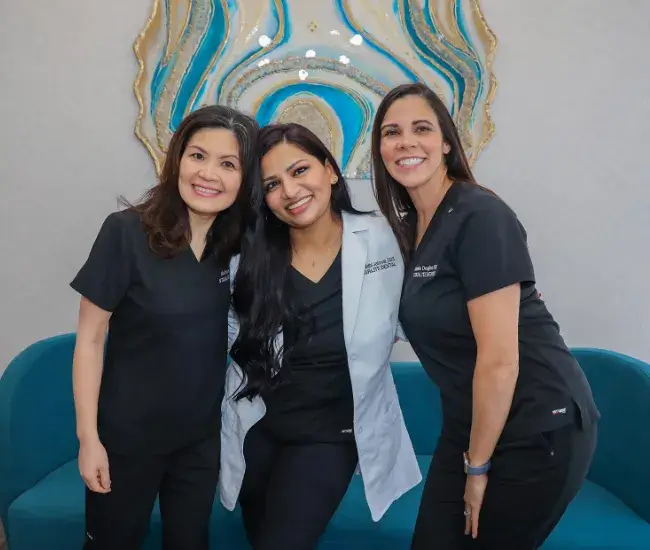

Ask about sedation careArrange a visit with our team.
Share what makes visits difficultTell us your concerns and past experiences.
Review your options and instructionsAgree on a plan for your care.
Start with what you need
You can tell us what makes dental visits difficult.
Past experiences, sounds, a sensitive gag reflex or the feeling of not knowing what comes next can make a visit harder. You do not need to explain everything perfectly. Let us know what concerns you when you arrange your appointment.
Clear explanations, at your pace
Our tell-show-do approach means explaining the steps, showing what is involved and then carrying out the treatment. Ask questions and let the team know when you need a pause.
Small comforts can help, too
Music and headphones, pillows and blankets are part of Starlite's approach to a calmer visit. Explore our comfort menu and tell us which options you would find helpful.
Comfort can start with the details around you.
Understand the options
Sedation helps with relaxation. It is different from numbing a tooth.
Local anesthesia numbs the treatment area. Sedation affects how relaxed or aware you feel. You may still need local anesthesia for dental work, even when sedation is part of the plan.
Laughing gas Nitrous oxide
Starlite's sedation care includes laughing gas, breathed through a small mask over your nose. It can help you feel calmer while you remain able to communicate.
Nitrous oxide is not intended to put you fully to sleep. Your dentist reviews whether it suits your health, your concerns and the planned treatment.
Oral medication A prescribed medicine
Oral sedation uses medication taken by mouth. Its effects and recovery depend on the medicine and the person. It is a different approach from inhaling laughing gas.
If you are interested in oral sedation, discuss the available option, responsible clinician and instructions with the team before treatment. Do not assume an earlier prescription is suitable for a new visit.
IV sedation Medication through a vein
IV describes how medication is given, not a guaranteed depth of sedation. It does not automatically mean general anesthesia or that you will be unconscious.
Ask which options can be arranged for your procedure, who would administer them and what monitoring and recovery are involved. These details must be agreed before a treatment appointment is scheduled.
The right approach depends on more than how nervous you feel. Your health, medicines, the dental procedure and the clinician's assessment all matter. No method is right for everyone.
Your first appointment
Meet the team. Understand the plan.
Your first visit starts with a discussion of your concerns, health history and dental needs before a sedation plan is agreed.
If you already have X-rays or a treatment plan from another dentist, tell us. Ask whether they should be sent before your visit; new images may still be needed.

Get to know the people behind your care. Tell our team what would help you feel more comfortable.
Talk through your concerns
Tell us about past dental or sedation experiences, a strong gag reflex, difficulty tolerating treatment, and anything you want the team to explain differently.
Review the dental care you need
The dentist assesses the problem and explains the treatment choices. A consultation is the start of planning, not a promise that dental work or sedation will happen that day.
Agree on the next appointment
Discuss the comfort option, clinician arrangements, estimated charges and preparation. You should know what is planned and what to do before you return.
Before and after sedation
Plan for the whole visit, including getting home.
Instructions depend on the method, your health and the procedure. Follow the personal directions given by your dental or anesthesia clinician.
Before your appointment
Share your health history, allergies, medicines and supplements, including any past reaction to sedation.
Ask for clear eating and drinking instructions. Do not assume every sedation method has the same fasting requirements.
Check which regular medicines to take with the clinician. Do not change them on your own.
Ask whether you need an adult escort and someone to stay with you afterward.
Before you leave the office
Confirm when you can drive, return to work or make important decisions.
Ask what recovery may feel like and which written instructions apply to your dental treatment.
Make sure you know who to contact if you have concerns afterward.
If you feel unwell or your health changes before the visit, contact the team so the plan can be reviewed.
Laughing gas often wears off quickly, but that is not a blanket clearance to drive. Other medicines, your response and your treatment can change the instructions.
Costs and payment
Know what your estimate includes.
Sedation and dental treatment can involve separate charges. Ask for an estimate that explains the planned method, appointment length, clinician fees and the dental work itself.
The team can explain the expected costs before you decide. Your estimate depends on your sedation plan and dental treatment.
Insurance
We work with PPO plans and can help check benefits and submit claims. Listed plans include MetLife, Delta Dental and Aetna. Participation and sedation benefits depend on your exact plan; a listed carrier does not guarantee coverage.
Financing
CareCredit is available to help eligible patients spread payments. Approval, eligibility and terms apply. Ask about an estimate if you are paying for care yourself.
Payment methods
Cash, check and credit/debit cards are accepted. Find more insurance and payment information, including the practice's dental discount plan.
Someone to talk things through with
Dr. Nidhi Jaiswal, DDS
Dr. Jaiswal earned her Doctor of Dental Surgery at VCU School of Dentistry. Her approach emphasizes listening to patients who feel anxious and explaining their care.
You can discuss the treatment you need and the comfort options with her team. If sedation is planned, confirm who will administer it and who will be responsible for monitoring and recovery.
Regular hours are shown at the top of this page. Contact us if you need help planning your arrival.
A look inside Starlite Dental in McKinney, before you arrive.
Before you book
A few questions you may have.
It is okay to ask about comfort before you make a treatment decision.
What if laughing gas has not helped me before?
Tell us about that experience before your visit. The dentist can discuss your concerns and the available alternatives after reviewing your health and treatment needs. It does not mean a particular medication or level of sedation will be suitable.
Can I ask about sedation for a cleaning?
Yes, you can raise the question when you arrange your visit. The team will explain how the first assessment works and whether sedation is appropriate for the care you need. Do not assume a cleaning or sedation can be provided without that discussion.
What if I have not seen a dentist for years?
You can start by telling us that you are anxious and have been away from care. An initial discussion and assessment help the team understand your priorities and explain the next steps without asking you to decide on all treatment at once.
Is sleep dentistry the same as being put to sleep?
The phrase is often used for sedation dentistry, but it does not describe one specific method or level. Ask what awareness and recovery to expect from the actual option being recommended. Nitrous oxide is not intended to make you fully unconscious.
Can you use records from my previous dentist?
Tell us which records or X-rays are available and ask how to have them sent. They may help with planning, but the dentist decides whether additional examination or imaging is needed.
Do you provide sedation for children or additional support needs?
Discuss the person’s age, health and support needs with the team first. Suitability, clinician arrangements and the setting need an individual assessment; information on this page is not a promise that every case can be managed here.
Start with a conversation
You do not have to figure it all out before you call.
Call our McKinney office to discuss sedation for your dental visit. Tell us what makes dental visits difficult, and ask what the first appointment involves.